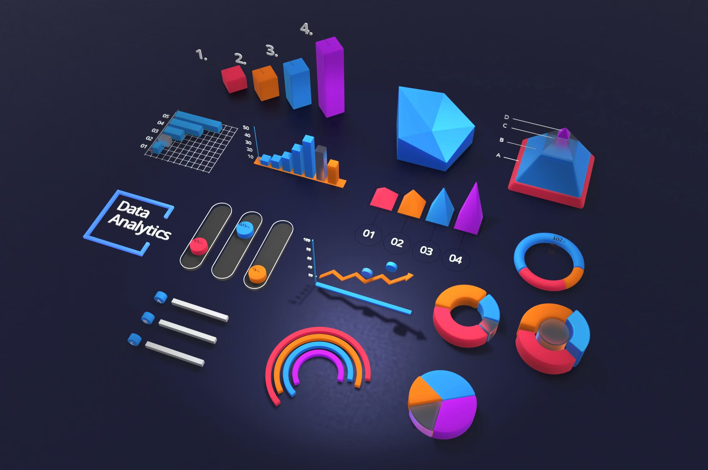
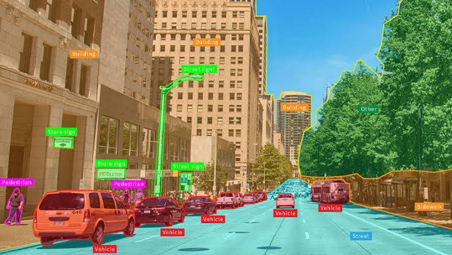
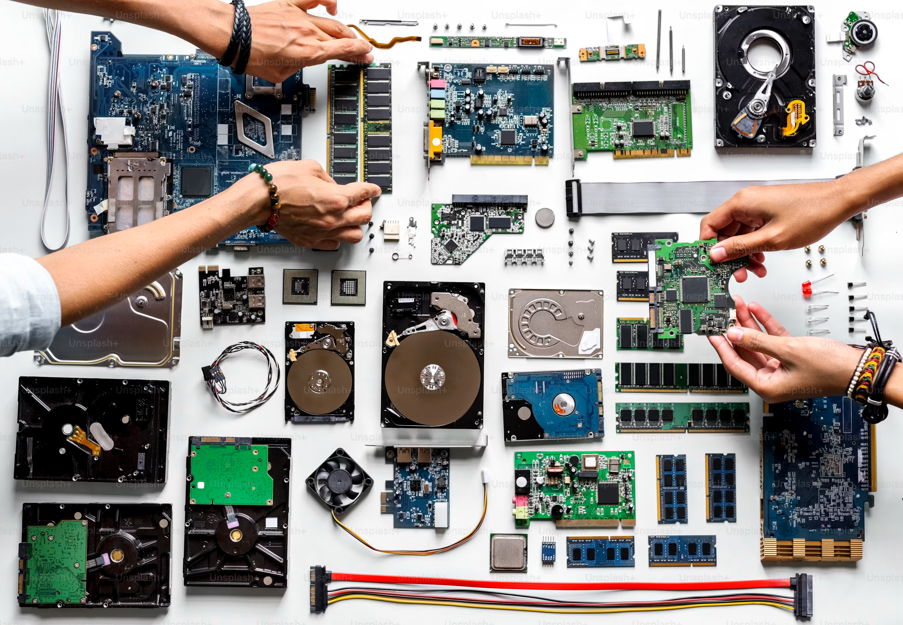
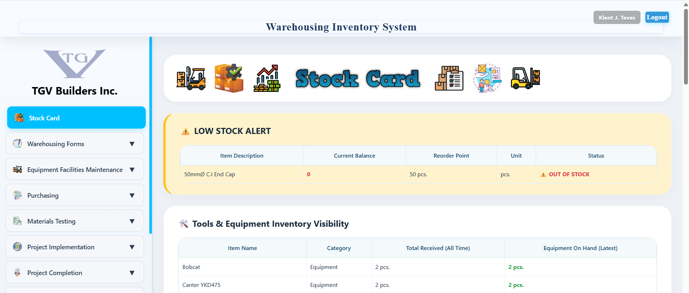

Data Technician
Excel & SQL, Power BI / Tableau and Data Quality.


I'm a Data Technician
I collect, clean, and validate datasets from multiple sources. I build dashboards and reports to turn raw data into clear, actionable insights for decision-making. I label and curate high-quality datasets for machine learning models. I ensure data accuracy and consistency by following detailed guidelines and performing quality assurance checks. I install, configure, and troubleshoot computer hardware, software, and network systems. I provide responsive technical support and perform system maintenance to ensure smooth operations.
See my projectsExcel & SQL, Power BI / Tableau and Data Quality.

CVAT, Labelbox, Label Studio and Lidar 3d/2D

Hardware & OS, Networking and System Maintenance.

Detail-oriented IT student seeking to leverage technical skills and academic foundation to drive team success while advancing professional development in a dynamic role.

Where I have worked and what I did there.
Scale Al/Remotasks Bootcamp Full-time
Projects: Whale/Wolf, Anteater 1B Vertical/Horizontal, 2023 Venus, 3D Road Irregularities.
Scale Al/Remotasks Bootcamp Full-time
Projects: Mammoth (Nov 2019 – August 2021)
Scale Al/Remotasks BootcampFull-time
Project: Mammoth (March 2019 – Sep 2019)
Straive Full-time
Project: LN keyed (Nov 2018 - Mar 2019)
Project: LN eCrash (Jan 2014 - Nov 2018)
Project: Martindale Hubbell (May 2012 - Jan 2014)
Cisco Networking Academy
Cisco Networking Academy
Cisco Networking Academy
Cisco Networking Academy
Cisco Networking Academy
Straive, Dumaguete City Philippines
Southern Tech College, Bayawan City Philippines

HTML, CSS, PHP and JavaScript

HTML, CSS

HTML, CSS, JavaScript
What people say
Working with Klent was effortless. He understood what we needed and delivered on time.
Ben Ladin, Project Manager
© 2026 Klent J. Teves